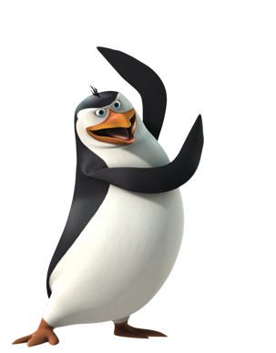
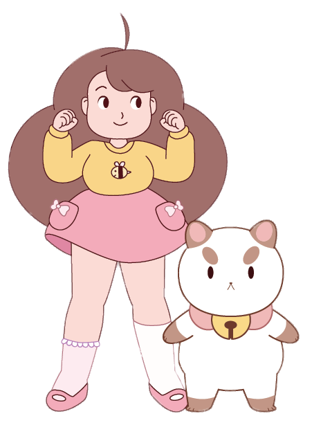
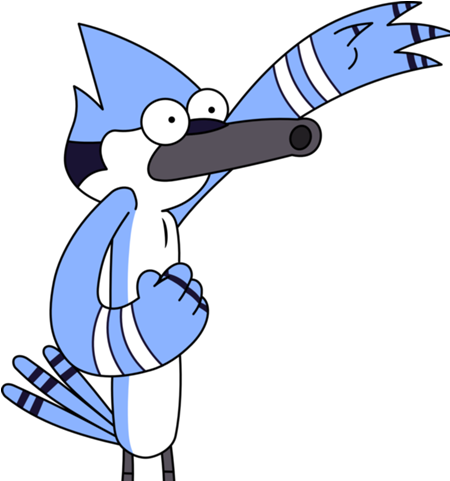

Información de los personajes
Rico: Es el especialista en armas y explosivos además de ser el psicópata del equipo, que se comunica principalmente mediante gruñidos, rara vez habla y es más común que diga palabras cortas como "si", "no" y "ok". Lo que lo hace único al resto del grupo es que puede tragarse cualquier objeto y regurgitarlo prácticamente sin hacerse daño.
Bee y PuppyCat: Bee tiene el cabello rizado color café, ojos café, piel clara y es de estatura media. Bee cambia de vestimenta constantemente pero su vestimenta más común es cuando ella usa un jersey amarillo con una imagen de una abeja, unos pantalones cortos de color rosa, calcetas blancas y botas marrones con moños rosas. PuppyCat por su parte es un gato de color blanco, con cejas, orejas, patas, y cola de color marrón claro. Lleva un collar color rosa con un cascabel dorado colgando, de complexión regordeta, patas cortas que (según Bee), lo hacen lento al correr.
Mordecai: Mordecai es un arrendajo azul. Es apacible, no usa ropa, juega VídeoJuegos, y bebe grandes cantidades de café y soda. Muestra mucha más paciencia y responsabilidad.
